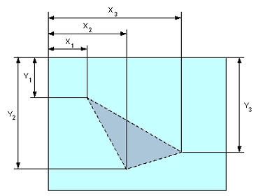
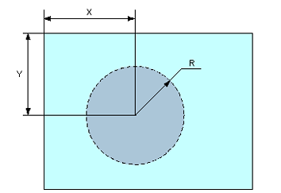
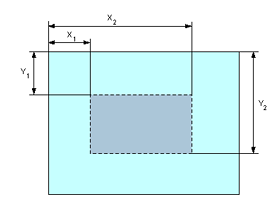
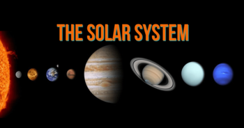
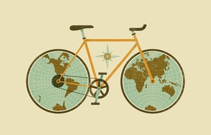

Использование тега <map> и <area>
Описание тега <area>
HTML тег <area> определяет активные области на изображении, которые являются ссылками. Тег задает форму области, ее размеры, устанавливает адрес документа, на который следует сделать ссылку, а также имя окна или фрейма, куда браузер будет загружать документ. Картинка (изображение) с активными областями, называется картой-изображением. Такая картинка ничем не отличается от обычной, за исключением того, что содержит активные области (ссылки). Области могут перекрывать друг друга, сверху окажется та, которая в коде располагается первее (выше). Элемент <area> используется только совместно с тегом <map>(который связывает координаты областей с изображением) в качестве его дочернего элемента.
Атрибуты тега <area>
- <alt>
- Определяет альтернативный текст, который будет виден вместо изображения, если оно не может быть отображено (из-за медленной связи, ошибки в атрибуте src и тд).
- <coords>
-
Атрибут coords указывает координаты активной области на карте-изображения. Он используется вместе с атрибутом shape для указания размера, формы и размещения активной области. Возможные значения атрибута:
- x1,y1,x2,y2 — указывает координаты верхнего левого и правого нижнего угла прямоугольника (shape="rect").
- x,y,радиус — определяет координаты центра окружности и радиус (shape="circle").
- x1,y1,x2,y2,...,xn,yn — определяет координаты вершин полигона (многоугольника) (shape="poly").
- <href>
- Атрибут href указывает адрес страницы, на которую ведет ссылка с активной области изображения, если он не указан или пропущен, то тег <area> не будет являться гиперссылкой (адрес может быть либо абсолютным либо относительным).
- <hreflang>
- Указывает двухбуквенный код языка, определяющий язык страницы, доступной по ссылке. Используется только совместно с атрибутом href и имеет исключительно информативный характер.
- <media>
- Атрибут media определяет тип документа, на который ведет ссылка или указывает, тип устройства, для которого предназначается ссылка (пример: мобильный телефон, принтер и тд.). Атрибут может принимать несколько значений и используется только совместно с атрибутом href.
- <rel>
- Атрибут rel определяет отношение между текущим документом и связанным. Атрибут может принимать несколько значений и используется только совместно с атрибутом href
- <shape>
-
Атрибут shape указывает форму области. Он используется совместно с атрибутом coords для указания размера, формы и размещения активной области. Возможные значения атрибута:
- default — определяет весь регион.
- rect — определяет прямоугольную область.
- circle — определяет круглую область.
- poly — определяет многоугольную область.
- <target>
-
Атрибут target определяет, где будет открыт документ, при переходе по ссылке. Используется только вместе с атрибутом href. Возможные значения атрибута:
- _blank — открывает документ в новом окне или вкладке.
- _parent — открывает документ в родительском фрейме.
- _self — открывает документ в той же директории, где располагается ссылка (значение по умолчанию).
- _top — открывает документ во всю ширину окна.
- имя_фрейма — открывает документ в iframe, имя которого было указано в качестве значения.
- <type>
- Атрибут type указывает MIME-тип (спецификация форматирования сообщений и кодирования информации для передачи по интернету) документа, на который ведет ссылка. Используется только совместно с атрибутом href.
Тег <area> так же поддерживает Глобальные атрибуты и События.
Описание тега <map>
HTML тег <map> используется для определения карты-изображения. Карта-изображение — это активная область на рисунке, являющаяся ссылкой на другие HTML документы. Атрибут name элемента <map> является обязательным, он связан с атрибутом usemap элемента <img>, так как создает связь между изображением и картой. Элемент <map> служит контейнером для элементов <area>, которые определяют активные области на картах-изображений.
Атрибуты тега <map>
- <name>
- Определяет имя карты-изображения, которое ассоциируется с атрибутом usemap элемента <img> и создает связь между изображением и картой.
Тег <map> так же поддерживает Глобальные атрибуты и События.
Примеры использования: расчет координат
Набор координат определяется формой области, которая задантся атрибутом shape. Отсчет координат ведется от левого верхнего угла изображения и указывается в px. Для прямоугольника (shape="rect") определяется четыре координаты — X1Y1X2Y2, как показано ниже:

Для окружности (shape="circle") определяется три координаты — координаты центра окружности (X, Y) и ее радиус (R), как показано на рисунке ниже:

Для полигона (многоугольника) (shape="poly") последовательно указываются координату каждой вершины X1Y1X2Y2, как показано ниже

Пример оформления кода
Данный пример взят с developer.mozilla.org

Код выглядит следующим образом:
<map name="infographic">
<area shape="rect" coords="184,6,253,27" href="https://mozilla.org" target="_blank" alt="Mozilla" >
<area shape="circle" coords="130,136,60" href="https://developer.mozilla.org/" target="_blank" alt="MDN" >
<area shape="poly" coords="130,6,253,96,223,106,130,39" href="https://developer.mozilla.org/docs/Web/Guide/Graphics"target="_blank" alt="Graphics" >
<area shape="poly" coords="253,96,207,241,189,217,223,103" href="https://developer.mozilla.org/docs/Web/HTML" target="_blank" alt="HTML" >
<area shape="poly" coords="207,241,54,241,72,217,189,217" href="https://developer.mozilla.org/docs/Web/JavaScript" target="_blank" alt="JavaScript" >
<area shape="poly" coords="54,241,6,97,36,107,72,217" href="https://developer.mozilla.org/docs/Web/API" target="_blank" alt="Web APIs" >
<area shape="poly" coords="6,97,130,6,130,39,36,107" href="https://developer.mozilla.org/docs/Web/CSS" target="_blank" alt="CSS" >
</map>
<img usemap="#infographic" src="/путь до изображения" alt="MDN infographic">
Примеры работ


Использованные ресурсы
- htmlbook.ru
- puzzleweb.ru
- developer.mozilla
- image-map
- Image from howtopronounce.com
- Image from goodfon.ru
- Конвертер формата изображений с ограничением на количество операций в день
- Конвертер формата изображений без ограничения на количество операций в день
- Википедия
- Сервис для уменьшения размеров изображения